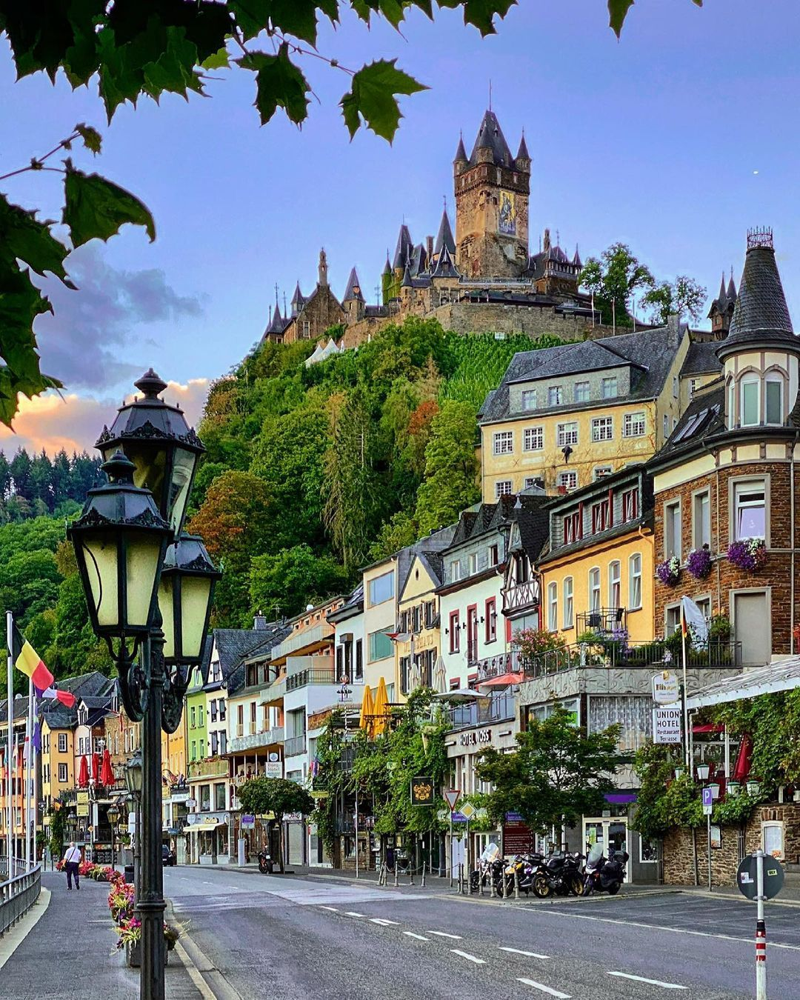
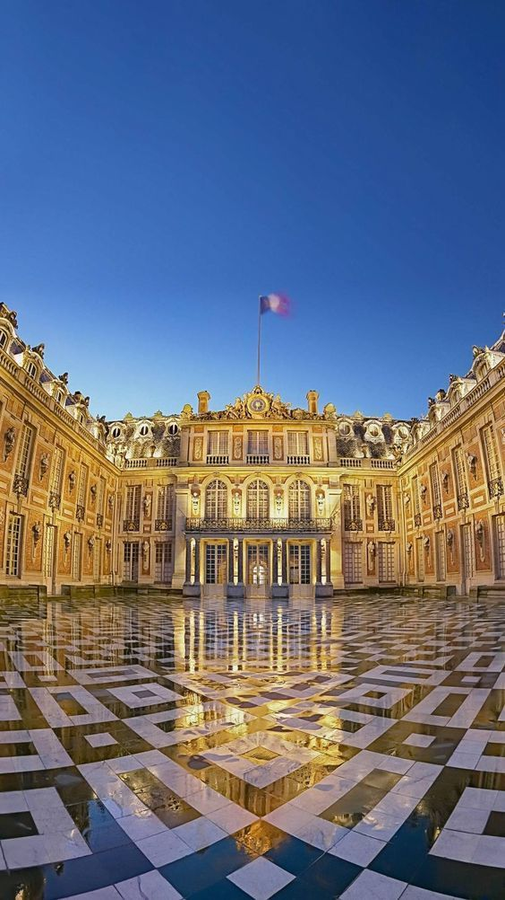
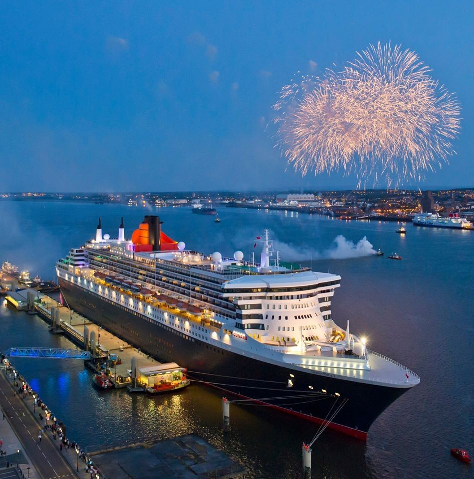
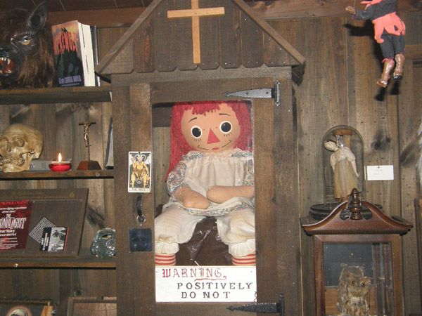

Meus lugares favoritos
Esses são alguns lugares do mundo que eu gostaria de visitar um dia:
- japão:
Terra do sol nascente, Ilha localizada no leste da Ásia, combina tradição milenar e tecnologia de ponta.
É famoso por templos, samurais, animes, culinária única e cidades vibrantes como Tóquio e Quioto.
- Alemanha:
País da Europa Central, marcado por castelos, florestas, cidades modernas e uma economia forte,
sendo um dos líderes mundiais em tecnologia e cultura.
- Castelo de Versalhes (França):
Palácio monumental do século XVII, perto de Paris, símbolo do poder da monarquia francesa,
célebre por seus jardins, luxo e a famosa Sala dos Espelhos.
- Queen Mary (navio):
Transatlântico britânico lançado em 1936, luxuoso e também usado na Segunda Guerra para transporte de tropas.
Hoje funciona como atração turística e hotel na Califórnia.
- Museu do Ocultismo dos Warren (EUA):
Localizado em Monroe, Connecticut, reúne objetos de investigações paranormais
feitas por Ed e Lorraine Warren, como a famosa boneca Annabelle.
